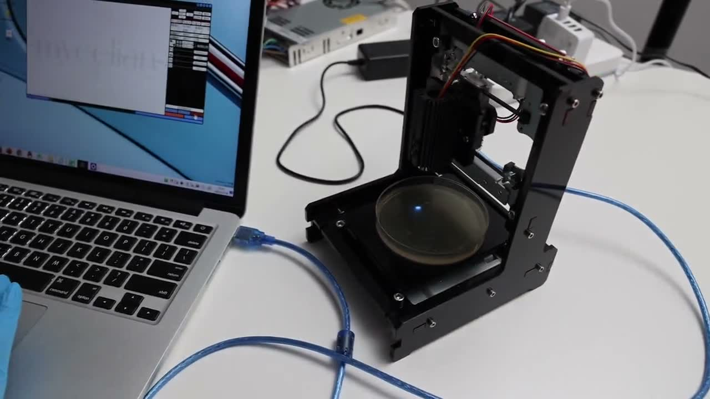
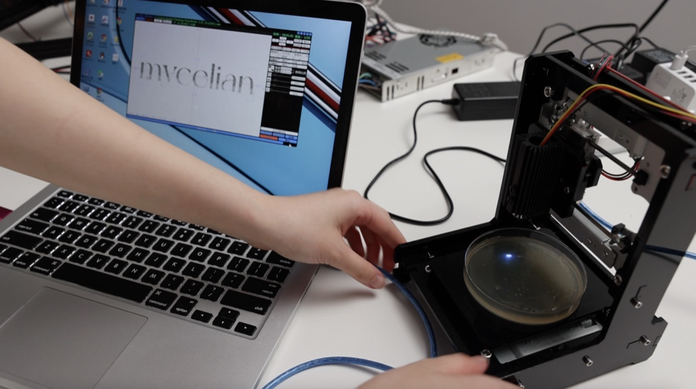
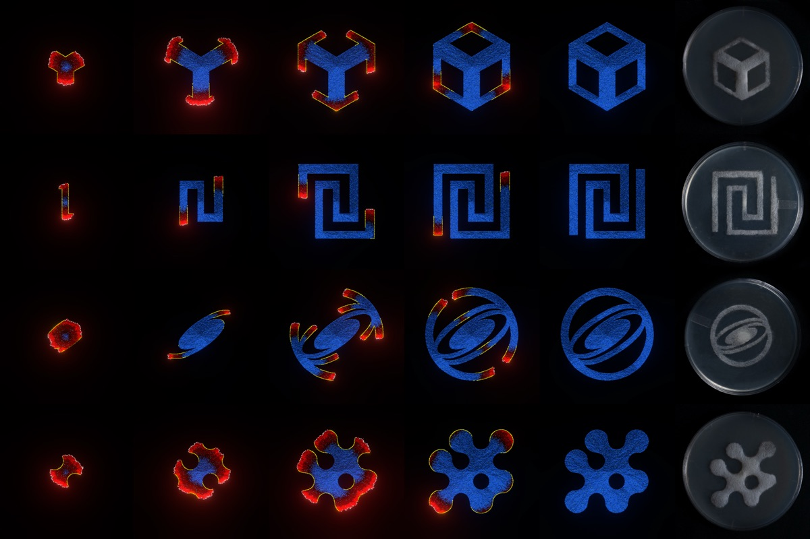
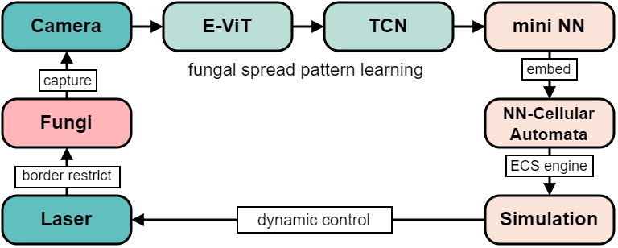
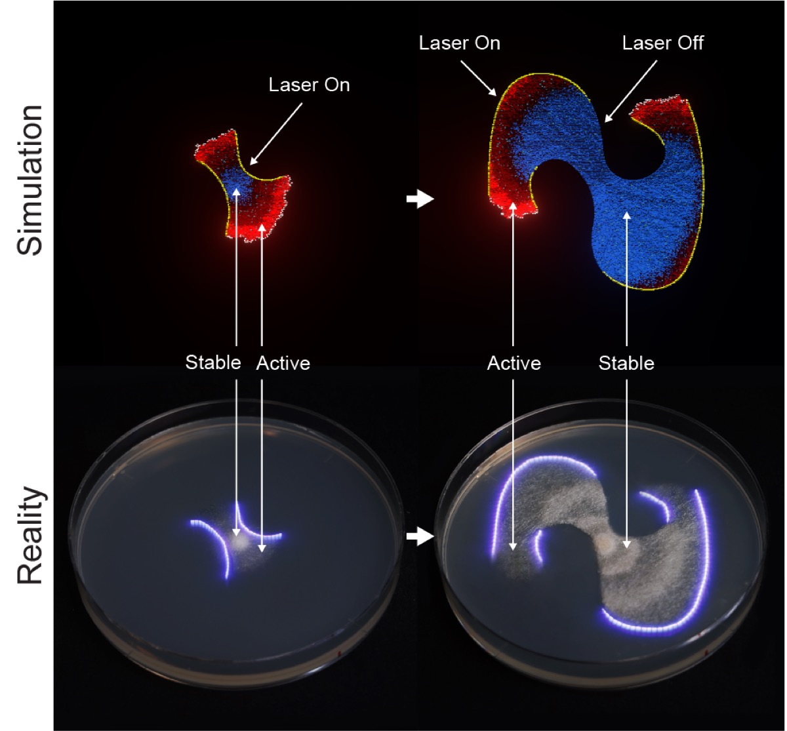
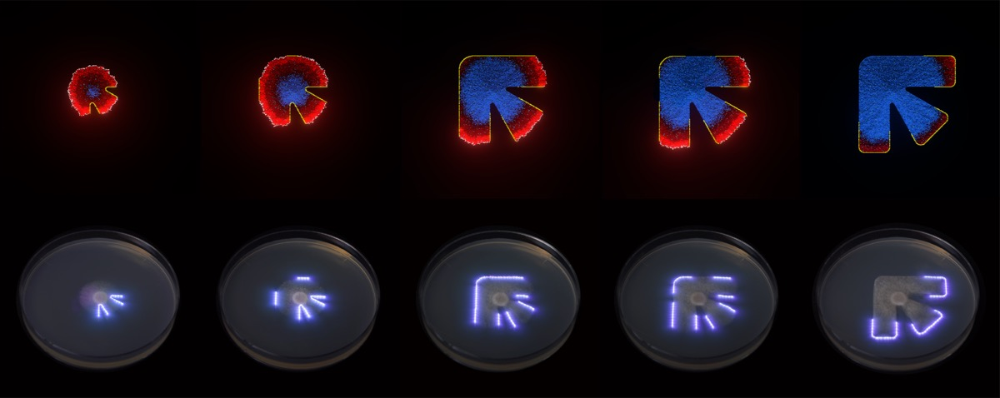
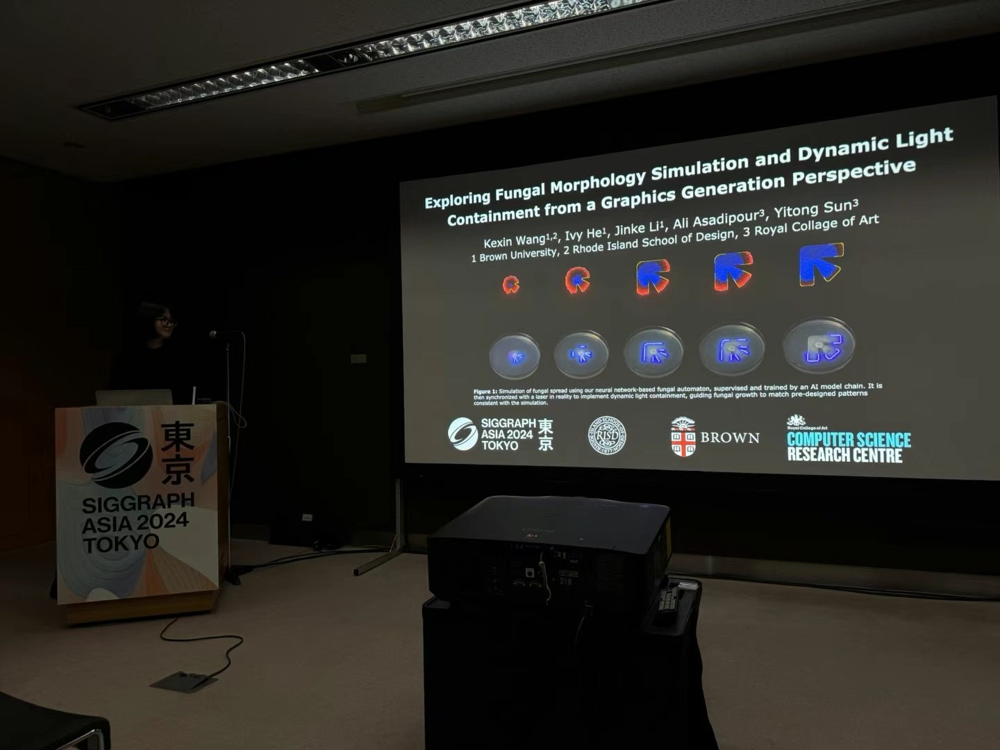
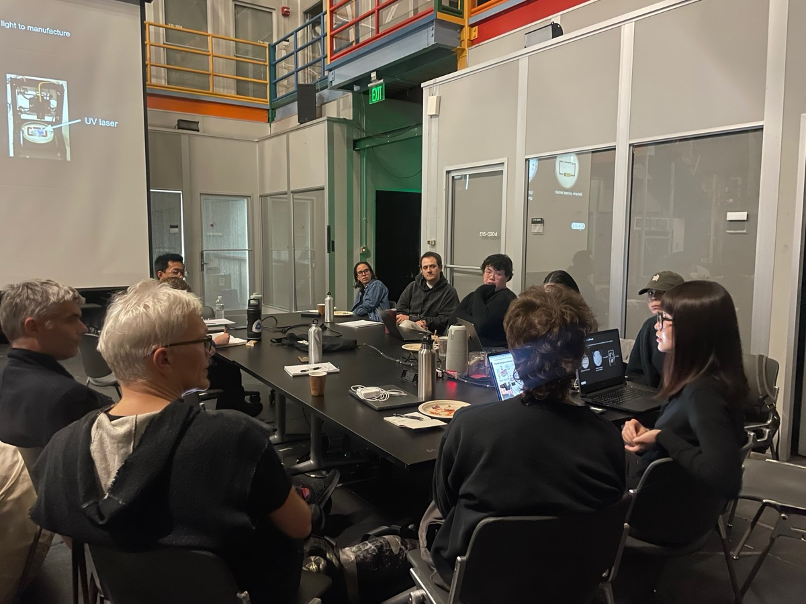
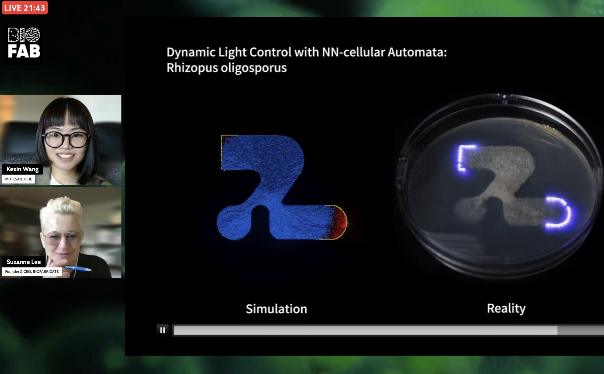
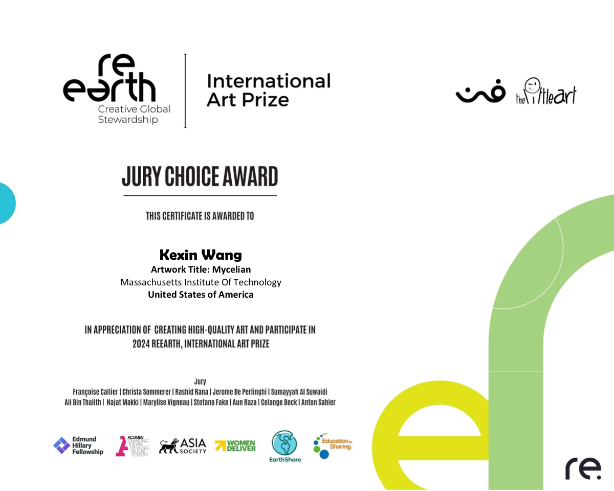

FunguyLab — Mycelian Micro
Manufacturing partner for a peer-reviewed bio STEAM kit — from FunguyLab, built on research published at SIGGRAPH Asia 2024.
{kind=link}

Project Overview
FunguyLab turns frontier bio-art research into a hands-on educational product — the funguy kit (Mycelian Micro). Students and makers assemble a DIY laser printer, inoculate Mucor fungus on agar plates, design patterns in software, and watch living mycelium grow their exact shape in 1–2 days.
BantuProduksi is FunguyLab's manufacturing partner. We help take the kit from research prototype to production-ready hardware — fabricating and assembling the printer components, sourcing and packaging materials, and ensuring every unit that ships meets the quality and care the design demands. Marcello Tania and FunguyLab founder Kexin Wang first met at the MIT Center for Bits and Atoms; that shared lab experience is the foundation of this partnership.
From the Lab
Real images from the research behind the kit — the fungus, the laser, the patterns, and the control software that turns a digital sketch into living art.
{kind=link}

{kind=link}


Video Demonstrations
Print demo — laser containment guiding Mucor growth into a designed pattern.
Science overview — how dynamic light containment shapes living fungal growth.
Kit preview — the design–build–grow loop in action.
Peer-Reviewed Research
The kit is built on peer-reviewed work presented at SIGGRAPH Asia 2024 Art Papers, Tokyo:
Exploring Fungal Morphology Simulation and Dynamic Light Containment from a Graphics Generation Perspective
Kexin Wang · Ivy He · Jinke Li · Ali Asadipour · Yitong Sun
The paper reframes fungal morphology simulation as a two-dimensional graphic time-series generation problem and introduces a neural-network-driven cellular automaton. A low-power laser exploits Mucor's photophobic response to contain growth at a designed boundary — the same principle the kit lets students run by hand.
{kind=link}

{kind=link}
{kind=link}
{kind=link}
{kind=link}
{kind=link}
{kind=link}
{kind=link}

{kind=link}
{kind=link}

Recognition & Community
The research behind Mycelian Micro has been presented and recognized internationally — from SIGGRAPH Asia and MIT to BioFabricate and the reEarth International Art Prize.
{kind=link}

{kind=link}

{kind=link}

{kind=link}

Instagram & Community
Follow the latest prints, kit updates, and behind-the-scenes work on Instagram and across the maker community:
- @funguy_lab on Instagram
- Reddit — r/mycology community discussion
- BioFabricate — LinkedIn feature
- reEarth Art Prize — award results
What BantuProduksi Delivers
- Manufacturing partner for the Mycelian Micro hardware kit
- Printer frame, optics, motors, and controller assembly
- Production sourcing, packaging, and quality control
- Iterative prototyping from research rig to desk-scale product
- Scale-up support as FunguyLab ships kits worldwide